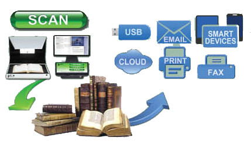

Study, Report, Research, Collaborate ... Digitally
The KIC Click is a high-speed, face-up book capture system at an affordable price. Its sleek and elegant look will complement any library floor. And with its True2TouchTM user interface, KIC Click is as easy to use as it is beautiful. Are there any compromises? You decide.
The KIC Click captures nearly 20 book pages per minute for instant access on tablets, notebooks, smart devices and easy transfer to desktop PCs and servers. With a bed size 30% larger than its nearest competitor, it captures up to 22 x16 inch books and materials at an uncompromising resolution of 300dpi.
Photocopiers, PCs, monitors and keyboards clutter up otherwise beautiful libraries across America. The smooth but rugged black or white KIC Clicks totally reverse that trend, adding beauty to even the most beautiful libraries.
KIC Serves Over Half of Students at Universities in America
In the U.S. alone, KIC serves over four million students at the top "brick and mortar" (non-online) colleges and universities. With the introduction of the KIC BookEdge, KIC Click, and KIC Click Mini, KIC is now affordable for virtually all institutions of higher learning and full-service public libraries. Last decade, libraries typically 'added' several KICs, but since 2010 libraries have begun to replace their entire patron-use copier fleets with self-serve book scanning systems.
A True Digital Age Multifunction System for Academic & Public Libraries
Book Scanning
Students at academic libraries want speed, and DLSG offers the fastest book scanners on the market. Patrons at public libraries need simplicity, and KIC provides three of the simplest possible user interfaces, one exclusively for scanning, one exclusively for copying and one exclusively for faxing. And KIC's best-of-breed power user interface is only a touch away.
